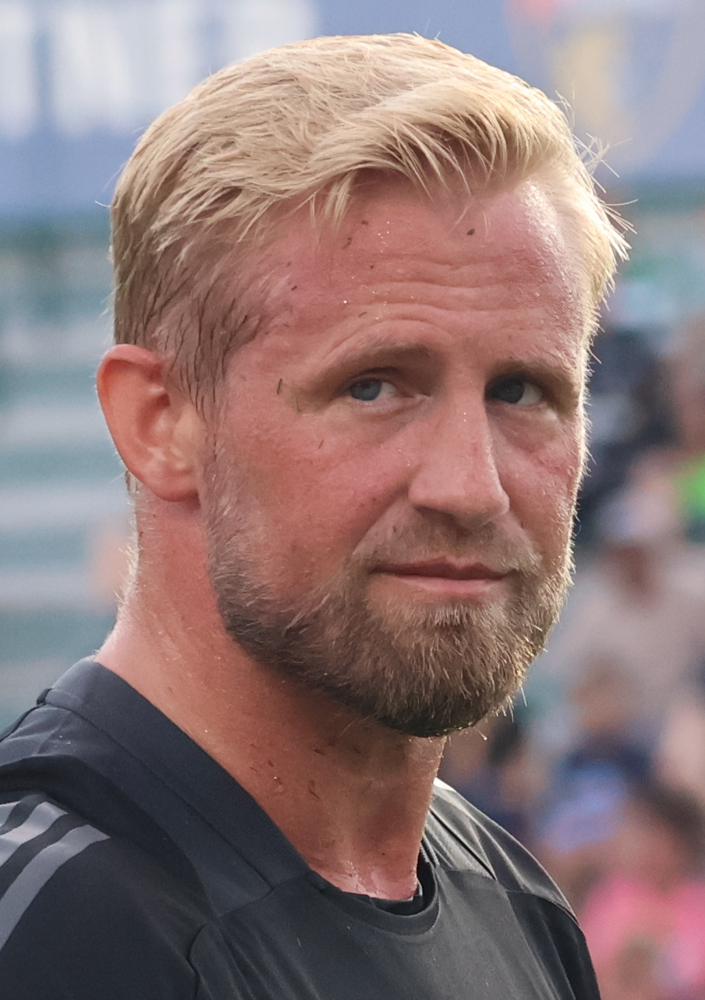
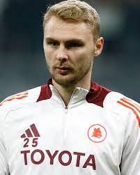
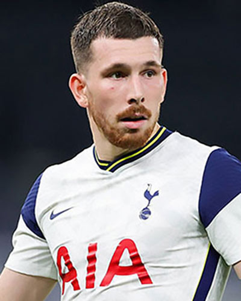
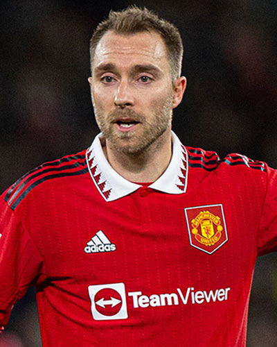
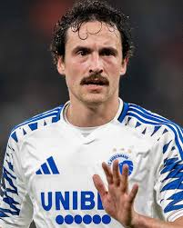
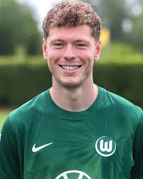
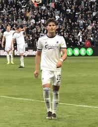
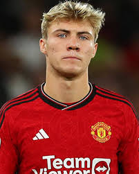

| Kasper Schmeichel |
Portero |
38 |
Kasper Schmeichel (n. 1986). Portero histórico de Dinamarca, referente con más de 90 partidos internacionales. |
 |
| Joachim Andersen |
Defensa central |
29 |
Joachim Andersen (n. 1996). Defensa del Crystal Palace y fijo en la zaga danesa. |
 |
| Victor Nelsson |
Defensa central |
26 |
Victor Nelsson (n. 1998). Central del Galatasaray, convocado regularmente en 2025. |
 |
| Andreas Christensen |
Defensa central |
29 |
Andreas Christensen (n. 1996). Central del Barcelona, titular en la selección danesa. |
 |
| Pierre-Emile Højbjerg |
Mediocampista |
30 |
Pierre-Emile Højbjerg (n. 1995). Mediocentro del Tottenham Hotspur y motor del mediocampo. |
 |
| Christian Eriksen |
Mediocampista ofensivo |
33 |
Christian Eriksen (n. 1992). Creador de juego histórico de Dinamarca, jugador del Manchester United. |
 |
| Thomas Delaney |
Mediocampista |
34 |
Thomas Delaney (n. 1991). Volante de contención, habitual en la selección. |
 |
| Andreas Skov Olsen |
Extremo |
25 |
Andreas Skov Olsen (n. 1999). Extremo derecho, goleador y pieza clave en 2025. |
 |
| Jonas Wind |
Delantero |
26 |
Jonas Wind (n. 1999). Delantero del Wolfsburgo, titular en la delantera danesa. |
 |
| Rasmus Højlund |
Delantero |
22 |
Rasmus Højlund (n. 2003). Joven delantero del Manchester United, figura emergente del ataque danés. |
 |